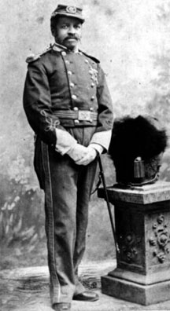

|

NAME: Christian Abraham Fleetwood
BORN: 1840
DIED: 1914
ALLEGIANCE: Union
HIGHEST RANK: Sergeant Major
UNIT: 4th U.S. Colored Troops
RECORD: Enlisted as sergeant, Company G, 4th
Regiment, U.S. Colored Volunteer Infantry, August 11, 1863.
Promoted to sergeant major August 19, 1863. Mustered out May
4, 1866.
|
|
Christian Abraham Fleetwood was born in Baltimore on July
21, 1840, the son of Charles and Anna Maria Fleetwood, both
free persons of color. He received his early education in
the home of a wealthy sugar merchant, John C. Brunes and his
wife, the latter treating him like a son. He continued his
education in the office of the secretary of the Maryland
Colonization Society, went briefly to Liberia and Sierra
Leone, and graduated in 1860 from Ashmun Institute (later
Lincoln University) in Oxford, Pennsylvania. He and others
briefly published the Lyceum Observer in Baltimore,
said to be the first African-American newspaper in the
South.
Fleetwood enlisted as a sergeant in Company G, 4th
Regiment, U.S. Colored Volunteer Infantry, on August 11,
1863. He was promoted on August 19 to sergeant major. The
regiment saw service in campaigns in North Carolina and
Virginia. For heroism in the critical Battle of Chaffin's
Farm on the outskirts of Richmond on September 29, 1864,
Fleetwood was awarded the Medal of Honor. Although every
officer of the regiment sent a petition for him to be
commissioned an officer, Secretary of War Edwin Stanton did
not recommend the appointment, and so Fleetwood remained a
sergeant major when he was honorably discharged on May 4,
1866.
After the war, Fleetwood worked as a bookkeeper in
Columbus, Ohio, until 1867, and in several minor government
positions in the Freedmen's Bank and War Department. He also
organized a battalion of D.C. National Guardsmen and then,
in the 1880s, Washington, D.C.'s, Colored High School Cadet
Corps. With his wife Sara Iredell, whom he married on
November 16, 1869, Fleetwood also led an active social life.
Fleetwood was able to remain active despite suffering
enormously from hearing loss inflicted during his time in
battle. He applied in 1891 for a pension because of "total"
deafness in his left ear, the result of "gunshot
concussion," and "severe" deafness in his right ear, the
result of catarrh contracted while in the army. His
application also stated that these ailments prevented him
from speaking or singing in public.
In 1898, when the Spanish-American War broke out, several
prominent Washingtonians recommended that Fleetwood be given
command of a battalion. The suggestion was apparently never
taken seriously by the War Department.
Christian Fleetwood died suddenly of heart failure in
Washington, D.C. on September 28, 1914. Among the honorary
pallbearers were such prominent Washingtonians as Maj.
Arthur Brooks, Daniel Murray, Whitefield McKinlay, and Judge
Robert H. Terrell.
Source: Christopher Bates for the History 139A website.
|